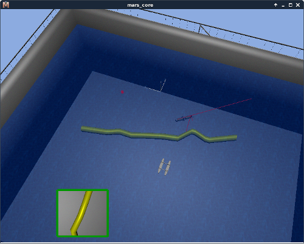

The core idea of integrating a simulation environment into rock is the need for offline evaluation/implementation of algorithms. The simulation provides the ability to calculate movements of a robot based on actuator targets, and to predict (more or less accurate) how the sensor data would look like given the state of the environment and the robot itself.
Rock currently provides a direct interface to the MARS Simulation. This simulation is not directly part of rock. Nevertheless the MARS simulation was developed within the field of Rock. The MARS Documentation could be found here here. MARS was developed as a standalone Simulation which runs on Windows/MacOS/Linux System, but for easier use within the ROCK Framework Rock core-developers started to integrate MARS into Rock, for more details visit the design background page.